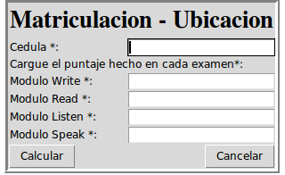

Matricular Estudiante

Para matricular un estudiante, este debe estar previamente registrado en el sistema.
Se introduce su documento de identidad (cédula) y posteriormente se continua llenando el formulario
con los resultados obtenidos en los exámenes de la institución.
BOTÓN CALCULAR:
Con este botón se podrá calcular y devolver el nivel al cual podría inscribirse el alumno.
Para aprobar el examen del test de ubicación el alumno deberá haber hecho un cierto porcentaje del total de puntos.
METODO DE Evaluación:
Con 74% o menos el sistema despliegará una lista con los Cursos Básicos disponibles.
Con 75% al 94% el sistema despliegará una lista con los Cursos Intermedios disponibles.
Con 95% o mas el sistema despliegará una lista con los Cursos Avanzados disponibles.
BOTÓN INSCRIBIR:
Este botón registra un alumno a la lista de inscriptos, y genera las cuotas dependiendo de la duración del curso seleccionado. Además se pregunta si el nuevo estudiante matriculado percibirá o no un descuento en el pago posterior de cuotas.
BOTÓN CANCELAR:
El botón cancelar limpia los campos de cada entrada.
Created with the Personal Edition of HelpNDoc: Free EPub and documentation generator